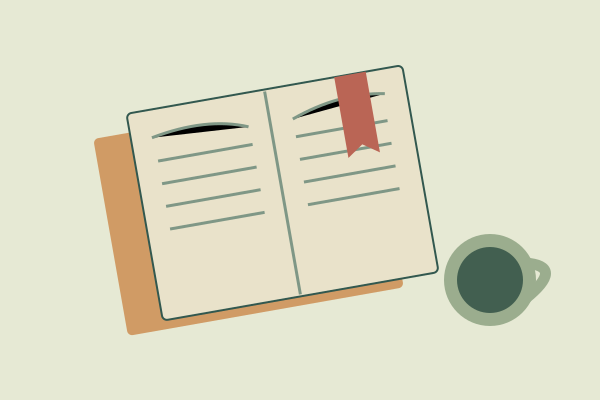
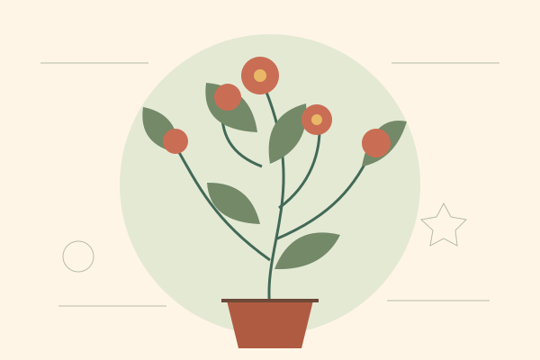
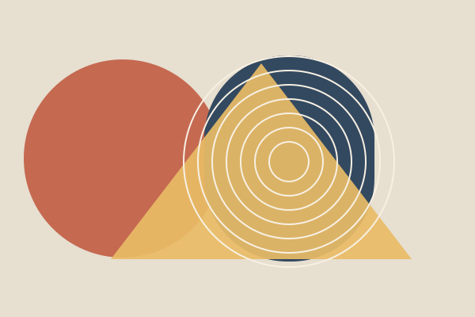

ideas / 5 min read
A notebook is a place to change your mind
Keeping a thought around long enough to see what it might become.
02 September 2026Ideas to turn over. Things to try. Small discoveries to keep. I’m Santiago, and this is where I put them.
Have a look around ↓
always a work in progress ↗
Keeping a thought around long enough to see what it might become.
02 September 2026
Not every project needs a business plan. Some just need an afternoon.
10 September 2026
A small case for wandering, paying attention, and arriving a little later.
18 September 2026